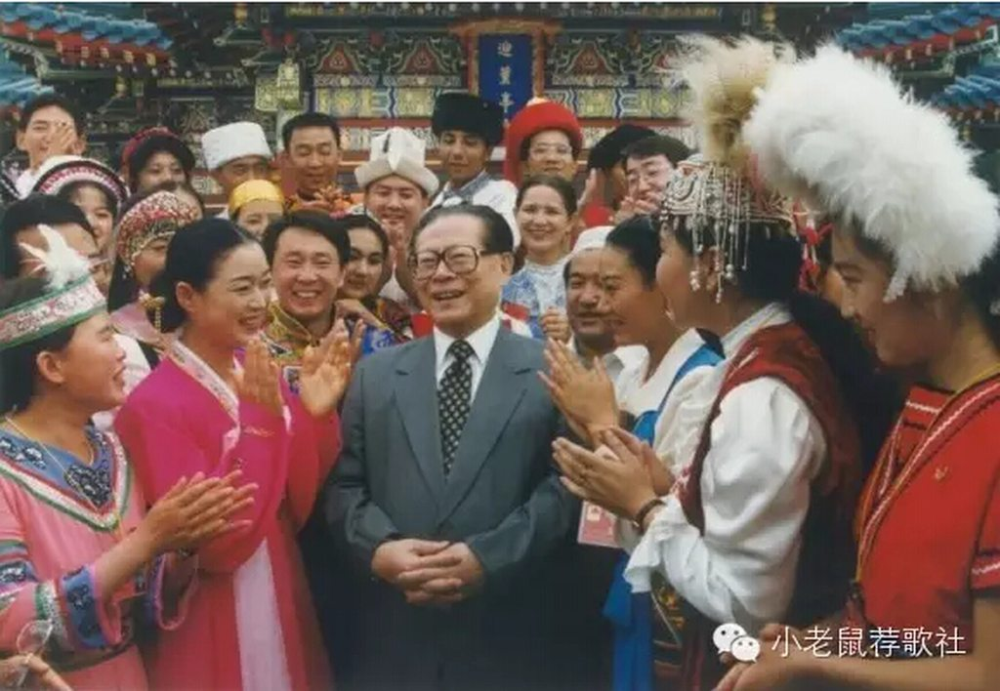

一、引子
希特勒的童年照
米兰·昆德拉在一篇文章中说到，有次他看到一张希特勒的童年照，照片中的小男孩纯真、无邪，旧日时光的温暖色泽，让希特勒也褪去了魔头的身份。昆德拉在那一刻居然可以跟希特勒都达成某种和解，把希特勒看成一个人，这让他震惊不已，不知该如何对待这种感受。
在这里，我当然不是拿希特勒来类比长者。而是想说，总有一些时刻，我们即使对最极端的人和事，也能穿越其制度身份，窥见某种生活的本真。这种本真可能转瞬即逝，更掩盖不了历史之恶。但在荒谬的人生旅程中，这种本真又总能成为隐秘的生活基石，微小而弥足珍贵。
这种本真，也恰恰是膜蛤文化的精神根基。它让我们在被大时代和大叙事裹挟的洪流中，可以回到某个开始的地方，“看到那个刚刚展开人生长卷的，意气风发的自己”。在那儿，我们可以找回那些童真。“就像很多年前，在太阳底下疯玩一圈回到家打开冰箱，看到光明冰砖的我。或许还有你。”（参见_《中冰砖和背后的男人》_）

二、缘起
江选研讨会
尽管膜蛤文化的心理根基早已潜藏于时代文化的土壤，但直接促使膜蛤之火呈成燎原之势的，必然是微信公号“江选研讨会”的横空出世。我印象中，应该距今也就不到两年时间吧。该公号的唯一撰稿人先后更换过“板板”、“黄薄码”等笔名，以划时代的生花妙笔写下了天马行空、风趣幽默的“蛤三篇”和感情充沛、资料详实、笔力遒劲的《一朝天子一朝逼格》、《长者的爱情故事》等文，一举成为经典文献，广大蛤丝反复温习、顶礼膜拜。这些文章以详实的考证作根基，很有史家的严谨风范，但又能从中提取出一个个妙趣横生的切入点，把长者从政治语态的云端请下，还原为一个你家隔壁的老大爷，你大爷又承载着大时代的炮火隆隆，让人追怀一个消逝的美好往昔。这种美好往昔与其说是一种历史现实的真实，不如把其看成我们心理上的某种寄托。“消逝的美好时代”，永远是我们成长道路上的精神故园。只不过这次，故园的中央，站着一位引领时尚戴黑框眼镜、穿高腰抹胸裤、会用无数国外语谈笑风生、精通多种乐器、具备极高数理化水平、书法造诣登峰造极、深谙电影艺术、运动能力极强、还会造冰砖的全方位无敌男神。（参见《长者会几国语言》、《长者的时髦经》、《长者会多少乐器》、《长者的数学水平》、《长者擅长的运动》、《长者一生看过多少电影》等一系列由各领域顶尖学者针对各自擅长门类研究得出的成果展示）
三、复兴
词与物
在“江选研讨会”经典文献的传播和推动下，广大蛤丝迅速结盟，交换各自的膜蛤心得，在网络和生活中创建了各种膜蛤阵地。在任何一种文化中，相关语言都是极重要的承载，近代结构主义文化理论，就由索绪尔的结构语言学生发。一种文化是否成型壮大，考察其独特的语言是一个重要途径，嘻哈文化，毒品文化，黑帮文化，乃至我们熟悉的各种网络文化，都有其各自成体系的黑话和切口。（一般你不浸润其中的话，根本就听不懂，比如《The Wire》这部美剧，就因为黑帮、毒贩和警察、政客各自的行业黑话太多，很多美国人一开始都看得一头雾水，听不懂人物在说什么。）那么我们反观膜蛤文化，很容易发现其一系列的黑话和切口，它们主要来自长者教育香港女记者的经典讲话、“搞的这个东西excited”讲话、“弄水最苦和鸭嘴笔”讲话中的各类语句词汇，以及“研讨会”经典文献中的一些语句词汇。对于蛤丝来说，naive、excited、angry、too young too simple等自然是必备英语单词，笑声不能打“哈哈”，要打“蛤蛤”，好不能说好，要说“吼啊”，教训人一定要带一句“识得唔识得啊”，写文章需要引用“世道变坏是从人们嘲笑文艺青年开始的”、“它们都到生活里去了，那里人口众多”，等等等等太多，我就不一一列举了。想要掌握这些语词使用方法，成为一个合格蛤丝，最好的途径还是多混迹蛤丝阵营，学系蛤丝交谈的基本姿势。（入门级蛤丝也看得出来，“学系”和“姿势”也都是蛤语。）如果想要速成学系，可以去看下王叫兽出的“人生经验分享会”入会试题，王叫兽在精神上承袭了板板，但板板在姿势水平和才华能力上比王叫兽是不知要高到哪里去了。
正如福柯在其经典著作《词与物》中所说，语言特点可以反映出相关文化的很多特征，这个下文再论及。这里我想先重点说一下我为什么把膜蛤界定为一种“青年亚文化”，我的理论依据来源于两本学术著作，一本是人类学家罗伯特·雷德菲尔德的《农民社会与文化》，另一本是文化研究伯明翰学派代表性学者迪克·赫伯迪格的《亚文化》。在《农民社会与文化》一书中，雷德菲尔德把文化区分为大传统和小传统，大传统指庙堂的，制度的，高层的，书面自觉的，小传统则指民间的，草根的，自发的，前者高大上严肃死板，后者则贴近生活活泼灵动。大传统接近高层话语，小传统则接近草根话语，草根话语倒不一定在影响范围和层次上就低于高层话语，但在整体文化氛围和感觉上，更类似的是赫伯迪格通过分析摇滚文化、嬉皮士、光头党总结出的“亚文化”，而不是死气沉沉的“主流文化”。所以我们如果从文化的特质和感觉，以及其中核心人群的年龄层次来判断，很容易发现，膜蛤文化虽然有一个官方高层吉祥物性质的核心人物，但却是经过民间解构和发酵之后，不折不扣的“青年亚文化”。这个矛盾和吊诡之处的成因，连通着一整代人的精神成长图景，揭示出这种图景，是我写作本文的原因。
当然，如果对膜蛤文化进行系统的研究，那可以得出的成果和结论肯定涉及各个层面。膜蛤文化与政治气候，膜蛤文化当中的转世轮回学说，作为子文化的续命文化，续命文化与道教巫术传统，现代传播中的网络膜蛤文化等等。各种题目，都值得跨领域的文化学者好好书写。本文限于我自身的兴趣点和知识面，将在下半部分逐层推进，主要只写三个方面：
1，长者的哪些特质造就了膜蛤文化，这些特质跟膜蛤文化的同构性；
2，蛤丝膜蛤的精神气质和情感认同中最大的特点；
3，膜蛤精神反映出的一整代人生活精神的变迁。
四、出走
红旗下的蛋
长者位列庙堂至尊，却在膜蛤文化中担负起幽默精神、文艺范和生活气，这自然得益于长者自身的独特气质和言行。比较下就立刻看出来，比如萧规曹随的面瘫暖男胡四，是绝无可能成为这样一种象征的。看过胡四唱歌，拘谨地不知所以，完全没有长者的天然灵动。所以长者一方面是制度的化身，另一方面又以自身的活泼多样化解了制度的森严，及至今天在膜蛤文化中完全消解官方形象，甚至成了亚文化乃至反文化的代言人。想想真是不可思议。不管长者治下政治制度的走向如何（这个我真是完全不懂），个性和个体身份的彰显，就是身体和精神生活中的民主。
在膜蛤文化中，蛤丝津津乐道的是长者穿白色西装的热带男孩造型，暴走狂飙英语的傲人文彩，弹奏夏威夷吉他的呆萌姿态，在重大场合拿梳子梳头旁若无人般的自在，等等这些，都跟官方形象截然相反。所以，膜蛤文化中的长者，就是一个反叛而特立独行的形象。这个红旗下的蛋，因为在官方话语中曾是红旗的至高象征，一到膜蛤文化却一转身就戳破了旗帜，滚动的身姿愈发撩人。如果说反文化，那没有比这样的形象更反体制、反主流了。这个道理其实很简单，领导人官方形象消解的破坏力，那可比反叛者声嘶力竭的呐喊大多了。
我们可以再重点看下语言这个载体，膜蛤文化中的黑话，当然绝对迥异于代表大会上的讲稿。所以长者怒斥女记者的讲话，一举奠定了膜蛤文化的基础词汇系统，那个完全不是四平八稳的官方词汇，而是个性男孩的真情发作。那是人的语言和说话方式，而不是官的语言和说话方式。
有一件事情可以为长者自身特质触发膜蛤文化这个逻辑作一个绝佳的注脚。著名文化评论家朱大可先生在《流氓的盛宴》一书中说到，梁思成心心念念复原的北京城中轴线对称建筑格局，根本就是皇权的象征。长者不顾众人反对，属意要搞国家大剧院这个破坏了北京城整严建筑布局的蛋形建筑，精神气质上很“流氓”。这种叛逆和一意孤行出走的“流氓”气，居然通过一个极权国家领导人的自身气质，对极权文化象征造成了破坏！传说长者是为了辣妹子才一心建国家歌剧院，此事若当真就更好玩、更人性、更“流氓”了！
膜蛤文化中的长者形象，当然不可能完全是长者的真实形象，但如果没有精神气质上如此接近的一些幽默流氓特点以及由此造就的一些事件和言行，那就根本不会有膜蛤文化了。
五、征途
在相对性中沉醉
蛤丝经常被人问一个问题，就是你们这么搞，到底是粉是黑？其实在最初，多数人的心态肯定是黑，正如前文所说，是对官方形象的消解啊，不黑怎么消解？包括我自己，最初看“江选研讨会”的文章时，都完全是当搞笑文看的，以为板板也完全是一心在黑长者呢。但这事情到了后面就越发不明朗了，因为在黑的过程中，偶尔会有丝丝粉的心态。最后就自己都不知道到底是黑是粉，是续命还是催命了。我想不同的蛤丝，肯定有不同的看法。大家共同分享的，其实是在相对性中沉醉的幽默精神，这才是膜蛤文化中最动人的地方。
我们在非黑即白的教育话语中长大，臧否历史人物更向来是中华文化的一大传统，所以辨别时代正负走向和人物红白属性在我们的生活环境中经常有人念叨。这种环境有时会压得人喘不过气来，一点都不好玩，也不接近事物的真相。所以当我在膜蛤文化中发现在相对性中沉醉的幽默精神时，真是大喜过望，这才是我之所以成为一个蛤丝的根本原因。
也正是因为这个原因，蛤丝阵营也吸纳了很多纯粹图个好玩的妹子，她们才没兴趣分析经济形势、历史事件和时代走向呢，说说搞个大新闻和无可奉告，根本就是：好玩！所以是粉是黑完全不重要，甚至多数蛤丝想都没想过这个问题，模棱两可、似是而非的幽默精神才是膜蛤文化的核心精神。那类指点江山的政治青年在膜蛤文化中可能完全找不到北，我们有时也分析几句时局，但是否确实完全不在意，时局于我，能出多少个段子才最有生活的价值和意义。
六、回归
只不过，是一场生活
但在这样消解和玩闹的膜蛤气氛中，并不是完全没有方向，尽管没有明晰的康庄大道，但在其中，还是有一条氤氲的雾中之路的。这个方向，简单说，就是对生活的回归。
膜蛤文化的主力始终是八零后人群，所以说其为“青年”亚文化最准确不过了。对于这群人来说，长者伴随了我们从年幼无知到青春懵懂再到找到各自归属的整个过程。最初，长者象征的是制度，世界对我们来说规矩森严、难以捉摸、不可更改；随后，长者化身为社会文化，在时代风气和民间小段的弥漫中，成了更微妙但依然庞大的文化隐喻；最终，在膜蛤文化这里，我们终于抵达了生活的彼岸。这三种状态，分别对应着我们启程求学、寻找迷失、成家立业找到归宿三个阶段，长者也逐步褪去起制度政治身份，在膜蛤文化这里成了生活精神的象征。
我们可以看到，在所有的膜蛤文中，除了幽默，最大的关注点都落在长者的生活细节和感受上，从“爱情故事”中如邻家大爷大妈的点滴到中冰砖甜味中飞舞的童年惊喜。制度规约，文化熏习，但最终，我们最逃不开，也最在意的，是说不尽的生活。长者对历史，对时代，到底做了多少正确又多少错误的事，在膜蛤文化中是完全找不到答案的。在膜蛤文化中，蛤丝恶搞，玩闹，但总不经意把长者还原为一个人，就像昆德拉在那张希特勒的童年照中看到的一样。我们不是要对他作一个辨别和判定，而是通过这样的方式对待一个象征性人物，可以让我们在某种程度上更亲近自己的生活。
鲍勃·迪伦在自传中说，他最终洞悉奥妙的一刻，就是把肯尼迪和马丁·路德·金看成一个丈夫和父亲的时刻。把任何人都还原为人，把握永远在相对性中的温暖，是最后的众妙之门。
时代历史，江山社稷，千古功业。最终，只不过，是一场命运；只不过，是一场游戏；只不过，是一场生活。
摘要中引托洛茨基的话：“我可以预测到革命的走向，却无法预测到我会在冬天打野鸭的时候冻伤脚。”生活，不是革命的走向，是你有可能会在冬天的时候冻伤脚。